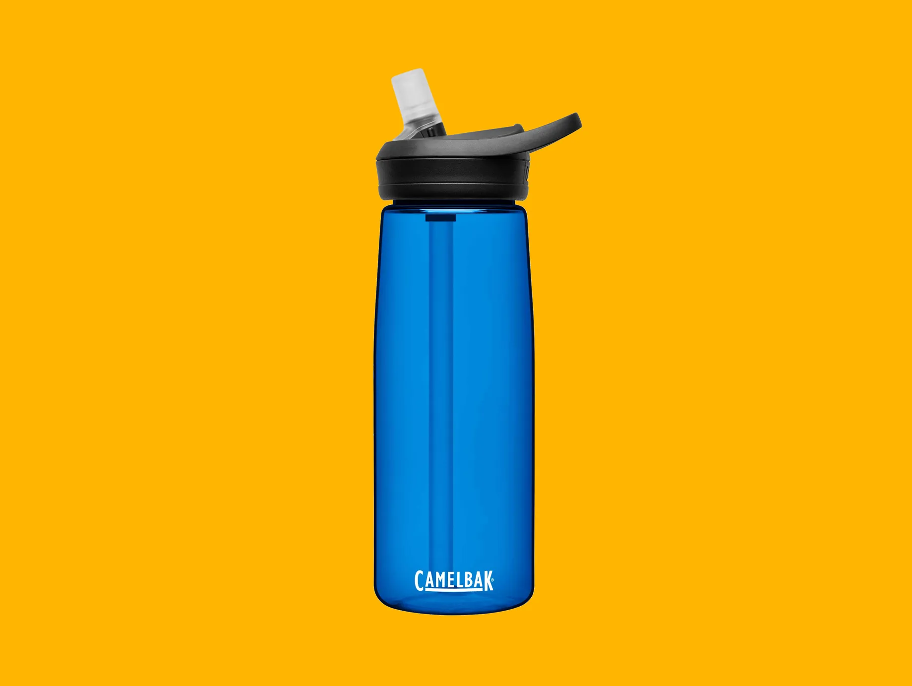

- Test Image - 
Output on Google lens - CAMELBAK Bottle
Output on Mobilenet Model - Water Bottle
Result -
Google Lens is more Accurate
-
Test Image -

Output on Google lens - Nike shoes
Output on Mobilenet Model - Shoes
Result -
Google Lens is more Accurate
- Test Image -